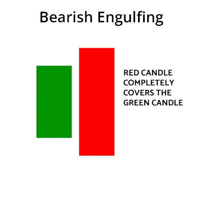

பேயரிஷ் ஏங்குலிங் முறை என்பது ஒரு டிரேடிங் முறையாகும், அது பங்கு சந்தையில்
எதிராக சாயாத சுழற்சி இல்லாமல் என்று குறிப்பிட்டுள்ளது கீழ்வாேய்ப்பும் குறிப்பிட்டுள்ளது. இந்த
முறை இரண்டு கண்டில்ஸ்டிக் மூலம் உருவாகின்றது. முதல் கண்டில்ஸ்டிக் ஒரு
நீளித்த பேயர்முகம் கண்டில்ஸ்டிக் மற்றும் இரண்டாவது கண்டில்ஸ்டிக் ஒரு சிறிய கீழ்வாய்ப்பு
கண்டில்ஸ்டிக் என்பன, அது முதல் கண்டில்ஸ்டிக் முற்றிலும் நுழையின்றன.
பேயரிஷ் ஏங்குலிங் முறை படி அதிர்கல் எதிராக எச்சரிக்கை அளிக்கின்றது. இது
பார்த்து கண்டால், கீழ்வாகும் சுழற்சி பங்கு விற்பனையில் டிரேடிங் செய்யலாம்.